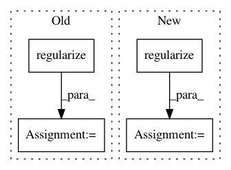

79ab2da38070ed0a972e72c16a44bd266ed6e941,geomstats/geometry/special_orthogonal.py,SpecialOrthogonal,regularize_tangent_vec_at_identity,#SpecialOrthogonal#Any#Any#Any#,186
Before Change
coef += mask_else_float * (
tangent_vec_metric_norm
/ tangent_vec_canonical_norm)
regularized_vec += mask_else_float * self.regularize(
coef * tangent_vec)
coef += mask_0_float
regularized_vec = mask_else_float * (
regularized_vec / coef)
else:
// TODO(nina): Check if/how regularization is needed in nD?
regularized_vec = tangent_vec
After Change
regularized_vec += gs.einsum(
"...,...i->...i",
mask_else_float,
self.regularize(coef_tangent_vec))
coef += mask_0_float
regularized_vec = gs.einsum(
"...,...i->...i", 1. / coef, regularized_vec)
regularized_vec = gs.einsum(
"...,...i->...i", mask_else_float, regularized_vec)
else:
// TODO(nina): Check if/how regularization is needed in nD?
regularized_vec = tangent_vec
In pattern: SUPERPATTERN
Frequency: 4
Non-data size: 4
Instances
Project Name: geomstats/geomstats
Commit Name: 79ab2da38070ed0a972e72c16a44bd266ed6e941
Time: 2020-04-16
Author: ninamio78@gmail.com
File Name: geomstats/geometry/special_orthogonal.py
Class Name: SpecialOrthogonal
Method Name: regularize_tangent_vec_at_identity
Project Name: geomstats/geomstats
Commit Name: 276d53ecd49afcf7d055a9c55ac51e6eaecc06e7
Time: 2020-02-17
Author: yann.cabanes@u-bordeaux.fr
File Name: geomstats/geometry/product_manifold.py
Class Name: ProductManifold
Method Name: regularize
Project Name: geomstats/geomstats
Commit Name: 2d199a2b947146cb788b6c81feb83a1f6bd196b2
Time: 2018-09-27
Author: ninamio78@gmail.com
File Name: geomstats/special_orthogonal_group.py
Class Name: SpecialOrthogonalGroup
Method Name: regularize_tangent_vec_at_identity
Project Name: geomstats/geomstats
Commit Name: b4cbde4ef4fc79ecc215815732abf03d1a4936ed
Time: 2020-02-17
Author: yann.cabanes@u-bordeaux.fr
File Name: geomstats/geometry/product_manifold.py
Class Name: ProductManifold
Method Name: regularize